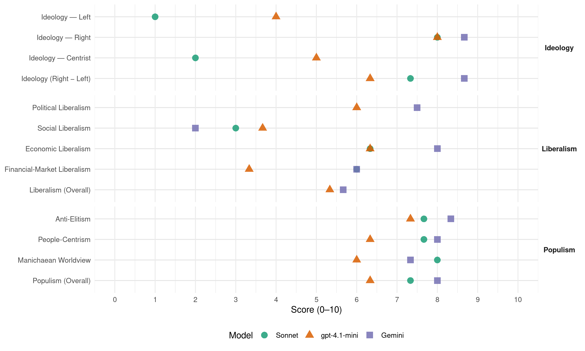

AfD (Germany, 2025)
manifesto_id 41953_202502
Get full text: This site shows derived annotations and short verbatim quotes only. The full manifesto text is © Manifesto Project / WZB — obtain it via manifesto-project.wzb.eu using the manifesto_id above.
Headline scores
| Dimension | Sonnet | gpt-4.1-mini | Gemini |
|---|---|---|---|
| Populism (Overall) | 7.3 | 6.3 | 8.0 |
| Anti-Elitism | 7.7 | 7.3 | 8.3 |
| People-Centrism | 7.7 | 6.3 | 8.0 |
| Manichaean Worldview | 8.0 | 6.0 | 7.3 |
| Ideology (Right − Left) | 7.3 | 6.3 | 8.7 |
| Liberalism (Overall) | – | 5.3 | 5.7 |
| Political Liberalism | – | 6.0 | 7.5 |
| Social Liberalism | 3.0 | 3.7 | 2.0 |
| Economic Liberalism | 6.3 | 6.3 | 8.0 |
| Financial-Market Liberalism | 6.0 | 3.3 | 6.0 |
Evidence per dimension
Economic Liberalism
Gemini · score 9.0 · verified · chunk 1
“Prinzipien der Sozialen Marktwirtschaft”
SOZIALE MARKTWIRTSCHAFT Wir stehen fest zu den Prinzipien der Sozialen Marktwirtschaft, die seit Jahrzehnten Wohlstand und sozialen Frieden in
Gemini · score 8.0 · verified · chunk 2
“marktwirtschaftliche Prinzipien wieder in den Vordergrund”
die Unabhängigkeit der Landwirte zu stärken und marktwirtschaftliche Prinzipien wieder in den Vordergrund zu rücken. Eine sach- und
Gemini · score 7.0 · verified · chunk 3
“Die AfD lehnt Subvention von Techniken ab”
Subventionen, Dirigismus und Halbleiterindustrie Die AfD lehnt Subvention von Techniken ab. Die staatliche Planung versagt regelmäßig gegenüber dem
gpt-4.1-mini · score 7.0 · verified · chunk 1
“Wir setzen uns für eine wettbewerbsfähige Wirtschaft ein”
Wir setzen uns für eine wettbewerbsfähige Wirtschaft ein, die Innovation und Unternehmertum fördert, Wohlstand für alle schafft und insbesondere dem Mittelstand neue Entfaltungsmöglichkeiten eröffnet.
gpt-4.1-mini · score 5.0 · verified · chunk 2
“Die AfD wird unseren zukünftigen Generationen die Hoffnung und die Möglichkeit auf ein würdiges Leben in Freiheit und Wohlstand zurückbringen”
Die ausufernde Plan- und Subventionswirtschaft der letzten Jahrzehnte werden wir in eine moderne soziale Marktwirtschaft zurückführen, mit der wir alle kommenden Herausforderungen meistern können. Die AfD wird unseren zukünftigen Generationen die Hoffnung und die Möglichkeit auf ein würdiges Leben in Freiheit und Wohlstand zurückbringen.
gpt-4.1-mini · score 7.0 · verified · chunk 3
“Die AfD lehnt Subvention von Techniken ab.”
Die AfD vertraut auf die menschliche Innovationskraft, die für jede Herausforderung Lösungen gefunden hat. Wir fordern technologieoffenes Denken und Handeln, um Wohlstand, gute medizinische Versorgung und hohe Lebensqualität zu fördern. Technologien müssen danach bewertet werden, ob sie dem Wohl unserer Bürger, der Wirtschaft und der Umwelt dienen. Die Politik muss Rahmenbedingungen schaffen, die auf dem aktuellen Stand von Wissenschaft und Technik basieren. Sicherheit sowie Wirtschaftlichkeit werden in der Anwendung gewährleistet. Neue Techniken werden oft aus ideologischen Gründen ohne wissenschaftliche Grundlage abgelehnt. Die AfD wird die Aufklärung über den positiven Einfluss von Technologien auf Mensch und Umwelt vorantreiben. Eine Entpolitisierung der Forschungslandschaft ist dringend erforderlich, beispielsweise bei den Fraunhofer- und Max-Planck-Instituten. Staatliche Forschungsförderung ist entscheidend für deren Überleben, wodurch politische Vorgaben die Forschungsschwerpunkte bestimmen und die Unabhängigkeit gefährden. Subventionen, Dirigismus und Halbleiterindustrie Die AfD lehnt Subvention von Techniken ab. Die staatliche Planung versagt regelmäßig gegenüber dem Markt und schadet unserer Innovationskraft und Wettbewerbsfähigkeit, wie es z. B. der Niedergang der deutschen Solarindustrie, der e-Mobilität, das Verbrennerverbot und das Heizungsgesetz zeigen.
Sonnet · score 7.0 · verified · chunk 1
“Staatliche Eingriffe in den Markt werden wir auf ein Minimum reduzieren”
Vorrang für den Wettbewerb – für einen attraktiven Wirtschaftsstandort Staatliche Eingriffe in den Markt werden wir auf ein Minimum reduzieren.
Sonnet · score 6.0 · verified · chunk 2
“marktwirtschaftliche Prinzipien wieder in den Vordergrund”
Die AfD setzt sich dafür ein, die Unabhängigkeit der Landwirte zu stärken und marktwirtschaftliche Prinzipien wieder in den Vordergrund zu rücken. Eine sach- und leistungsgerechte Vergütung der Landwirte muss generationengerecht gesichert sein.
Sonnet · score 6.0 · verified · chunk 3
“staatliche Planung versagt regelmäßig gegenüber dem Markt”
Die staatliche Planung versagt regelmäßig gegenüber dem Markt und schadet unserer Innovationskraft und Wettbewerbsfähigkeit.
Financial-Market Liberalism
Gemini · score 8.0 · verified · chunk 1
“Chancen des Kapitalmarktes zur Sicherung”
Die Chancen des Kapitalmarktes nutzen Die Chancen des Kapitalmarktes zur Sicherung unserer Renten wurden in den letzten Jahrzehnten sträflich
Gemini · score 8.0 · verified · chunk 2
“Deregulierung des Bitcoins sowie der Bitcoin-Wallets”
Die AfD fordert die weitgehende Deregulierung des Bitcoins sowie der Bitcoin-Wallets und der Handelsplätze. Wir setzen uns ein
Gemini · score 2.0 · verified · chunk 3
“daher lehnen wir den „Digitalen Euro“ ab”
geeignet, die Bürgerrechte zu untergraben; daher lehnen wir den „Digitalen Euro“ ab. Wir wollen wieder selbstverantwortliche und souveräne
gpt-4.1-mini · score 5.0 · verified · chunk 1
“Erhöhung des Sparerpauschbetrages auf 6.672 Euro”
Die AfD will den Sparerpauschbetrag auf 6.672 Euro erhöhen und an die Geringfügigkeitsgrenze koppeln, um den Menschen in Deutschland, vor allem dem Mittelstand, die Möglichkeit zu geben, ihr Vermögen sicher und steueroptimiert aufzubauen.
gpt-4.1-mini · score 3.0 · verified · chunk 2
“Die AfD ist zudem offen für alle sinnvollen Optionen, die Target-Forderungen für deutsche Bürger zu „monetarisieren“ und nutzbar zu machen”
Forderungen zunächst abzuschmelzen, dann täglich auszugleichen und bis dahin mit Sicherheiten zu unterlegen. Die AfD ist zudem offen für alle sinnvollen Optionen, die Target-Forderungen für deutsche Bürger zu „monetarisieren“ und nutzbar zu machen.
gpt-4.1-mini · score 2.0 · verified · chunk 3
“Die faktische Euro-Transferunion verstößt gravierend gegen die Verträge zur Euro-Währungsgemeinschaft.”
Wir erleben inzwischen eine von Brüssel ausgehende illegitime Entdemokratisierung, Zentralisierung, Überregulierung und Planwirtschaft. Die faktische Euro-Transferunion verstößt gravierend gegen die Verträge zur Euro-Währungsgemeinschaft. Deutschland ist in dieser der größte Nettozahler. Die Dauerkrise des Euro ist auch Folge der mangelnden Durchsetzung der Stabilitätskriterien im Euroraum und vertragswidriger Schuldenaufnahmen.
Sonnet · score 5.0 · mixed · chunk 1
“Rückkehr zu einer Kapitalallokation über funktionierende Märkte”
keine ideologische und zentralistische Geld- und Wirtschaftspolitik und Rückkehr zu einer Kapitalallokation über funktionierende Märkte. Verschuldung und Steuererhebung sollen generell nur auf nationaler Ebene stattfinden.
Sonnet · score 6.0 · verified · chunk 2
“weitgehende Deregulierung des Bitcoins sowie der Bitcoin-Wallets”
Die AfD fordert die weitgehende Deregulierung des Bitcoins sowie der Bitcoin-Wallets und der Handelsplätze. Wir setzen uns ein für die Beibehaltung der Umsatzsteuer-Freiheit von Bitcoin-Transaktionen.
Political Liberalism
Gemini · score 8.0 · verified · chunk 1
“demokratischen Rechte kompetent wahrnehmen”
selbstbewusste und kritische Bürger, die ihre demokratischen Rechte kompetent wahrnehmen, und möchten deshalb die Bürger durch staatliche Vorgaben
Gemini · score 7.0 · verified · chunk 2
“Volksentscheide nach Schweizer Vorbild”
Volksabstimmungen nach Schweizer Vorbild Wir fordern Volksentscheide nach Schweizer Vorbild auch für Deutschland. Denn die uneingeschränkte
Gemini · score 4.0 · mixed · chunk 3
“Gewährleistung der bürgerlichen Selbstbestimmung”
Die AfD tritt für die Bewahrung bzw. Wiederherstellung der bürgerlichen Selbstbestimmung im Zivilrechtsverkehr ein. Deshalb lehnen wir
gpt-4.1-mini · score 6.0 · verified · chunk 1
“freie Meinungsäußerung schließt auch das Recht auf Irrtum ein”
Kritische und vermeintlich störende Meinungen, solange sie nicht die Grenze zur Strafbarkeit überschreiten, gehören zum verfassungsrechtlich garantierten Recht eines jeden Bürgers unseres Landes. Die Äußerung der freien Meinung in Medien jeglicher Art stellt auch eine Kontrollmöglichkeit des Bürgers gegenüber dem Staat dar. Die freie Meinungsäußerung schließt auch das Recht auf Irrtum ein.
gpt-4.1-mini · score 6.0 · verified · chunk 2
“Wir fordern Volksentscheide nach Schweizer Vorbild auch für Deutschland”
Volksabstimmungen auf Bundesebene müssen zentraler Gegenstand jeder Koalitionsverhandlung sein. Der Souverän soll das Recht haben, vom Parlament beschlossene Gesetze zu ändern oder abzulehnen. Wir fordern Volksentscheide nach Schweizer Vorbild auch für Deutschland.
gpt-4.1-mini · score 6.0 · verified · chunk 3
“Grundrecht der Meinungsfreiheit – keine Zensur in der öffentlichen Debatte”
Eine Vormachtstellung in den sozialen Medien und im Bildungswesen darf nicht dazu genutzt werden, die politische Willensbildung einseitig zu beeinflussen. Als Quasi-Oligopole sollen die großen Anbieter sozialer Medien verpflichtet werden, die Meinungsfreiheit ihrer Nutzer zu respektieren. Das Internet muss als Ort der freien Meinungsäußerung erhalten bleiben. Staatliche Zensurvorschriften und staatlich aufgezwungene Abkommen mit privaten Unternehmen, die Zensurmaßnahmen durchführen, werden wir umgehend abschaffen.
Sonnet · score 4.0 · mixed · chunk 2
“Grundrecht der Meinungsfreiheit – keine Zensur”
Grundrecht der Meinungsfreiheit – keine Zensur in der öffentlichen Debatte. Jede Zensur von Meinungsäußerungen stellt einen Angriff auf das Grundrecht der Meinungsfreiheit dar.
Sonnet · score 5.0 · mixed · chunk 3
“Entpolitisierung der Justiz”
Entpolitisierung der Justiz. Die AfD will die Einflussnahme der politischen Parteien auf die Ernennung von Richtern und Staatsanwälten verhindern.
Liberalism (Overall)
Gemini · score 7.0 · verified · chunk 1
“Prinzipien der Sozialen Marktwirtschaft”
SOZIALE MARKTWIRTSCHAFT Wir stehen fest zu den Prinzipien der Sozialen Marktwirtschaft, die seit Jahrzehnten Wohlstand und sozialen Frieden in
Gemini · score 6.0 · verified · chunk 2
“marktwirtschaftliche Prinzipien wieder in den Vordergrund”
die Unabhängigkeit der Landwirte zu stärken und marktwirtschaftliche Prinzipien wieder in den Vordergrund zu rücken. Eine sach- und
Gemini · score 4.0 · verified · chunk 3
“Gewährleistung der bürgerlichen Selbstbestimmung”
Die AfD tritt für die Bewahrung bzw. Wiederherstellung der bürgerlichen Selbstbestimmung im Zivilrechtsverkehr ein. Deshalb lehnen wir
gpt-4.1-mini · score 6.0 · verified · chunk 1
“Wir setzen uns für eine wettbewerbsfähige Wirtschaft ein”
Wir setzen uns für eine wettbewerbsfähige Wirtschaft ein, die Innovation und Unternehmertum fördert, Wohlstand für alle schafft und insbesondere dem Mittelstand neue Entfaltungsmöglichkeiten eröffnet.
gpt-4.1-mini · score 5.0 · verified · chunk 2
“Die AfD wird unseren zukünftigen Generationen die Hoffnung und die Möglichkeit auf ein würdiges Leben in Freiheit und Wohlstand zurückbringen”
Die ausufernde Plan- und Subventionswirtschaft der letzten Jahrzehnte werden wir in eine moderne soziale Marktwirtschaft zurückführen, mit der wir alle kommenden Herausforderungen meistern können. Die AfD wird unseren zukünftigen Generationen die Hoffnung und die Möglichkeit auf ein würdiges Leben in Freiheit und Wohlstand zurückbringen.
gpt-4.1-mini · score 5.0 · verified · chunk 3
“Grundrecht der Meinungsfreiheit – keine Zensur in der öffentlichen Debatte”
Eine Vormachtstellung in den sozialen Medien und im Bildungswesen darf nicht dazu genutzt werden, die politische Willensbildung einseitig zu beeinflussen. Als Quasi-Oligopole sollen die großen Anbieter sozialer Medien verpflichtet werden, die Meinungsfreiheit ihrer Nutzer zu respektieren. Das Internet muss als Ort der freien Meinungsäußerung erhalten bleiben. Staatliche Zensurvorschriften und staatlich aufgezwungene Abkommen mit privaten Unternehmen, die Zensurmaßnahmen durchführen, werden wir umgehend abschaffen.
Sonnet · score 5.0 · mixed · chunk 1
“Staatliche Eingriffe in den Markt werden wir auf ein Minimum reduzieren”
Vorrang für den Wettbewerb – für einen attraktiven Wirtschaftsstandort Staatliche Eingriffe in den Markt werden wir auf ein Minimum reduzieren.
Sonnet · score 4.0 · mixed · chunk 2
“marktwirtschaftliche Prinzipien wieder in den Vordergrund”
Die AfD setzt sich dafür ein, die Unabhängigkeit der Landwirte zu stärken und marktwirtschaftliche Prinzipien wieder in den Vordergrund zu rücken.
Sonnet · score 4.0 · mixed · chunk 3
“Bewahrung einer freiheitlichen Privatrechtsordnung”
Die AfD wird sich im Deutschen Bundestag gegen diese Entwicklung und für die Bewahrung einer freiheitlichen Privatrechtsordnung einsetzen.
Anti-Elitism
Gemini · score 8.0 · verified · chunk 1
“Unsicherheit durch bürgerferne Politik”
der Bürger unseres Landes ist heute von Verunsicherung und Pessimismus geprägt: Unsicherheit durch bürgerferne Politik; Unsicherheit darüber, was man noch sagen darf
Gemini · score 9.0 · verified · chunk 2
“eine politische Klasse herausgebildet”
In unserem Land hat sich jedoch eine politische Klasse herausgebildet, die nicht nur den Umbau des Staates
Gemini · score 8.0 · verified · chunk 3
“Die EU und die sie tragenden Eliten”
souveräner, demokratischer Staaten. Die EU und die sie tragenden Eliten haben sich jedoch mit den Verträgen von Maastricht
gpt-4.1-mini · score 7.0 · verified · chunk 1
“bürgerferne Politik”
Die Stimmung der Bürger unseres Landes ist heute von Verunsicherung und Pessimismus geprägt: Unsicherheit durch bürgerferne Politik; Unsicherheit darüber, was man noch sagen darf; Unsicherheit über die Sicherheit in unseren Städten; Angst vor einem großen Krieg und Sorge um die finanzielle Zukunft.
gpt-4.1-mini · score 8.0 · verified · chunk 2
“eine politische Klasse herausgebildet, die nicht nur den Umbau des Staates im Sinne ihrer linksgrünen Ideologie verfolgt, sondern gleichzeitig auch die Erhaltung ihrer Macht, ihres Status und ihres materiellen Wohlergehens anstrebt”
In unserem Land hat sich jedoch eine politische Klasse herausgebildet, die nicht nur den Umbau des Staates im Sinne ihrer linksgrünen Ideologie verfolgt, sondern gleichzeitig auch die Erhaltung ihrer Macht, ihres Status und ihres materiellen Wohlergehens anstrebt. Sie zerstört die soziale und kulturelle Zukunft unseres Volkes, unsere Wirtschaft und damit unseren Wohlstand.
gpt-4.1-mini · score 7.0 · verified · chunk 3
“Die EU und die sie tragenden Eliten haben sich jedoch mit den Verträgen von Maastricht und Lissabon von dieser Ursprungsidee verabschiedet.”
Die AfD steht seit ihrer Gründung zu der Idee eines Europas der Vaterländer, einer europäischen Gemeinschaft souveräner, demokratischer Staaten. Die EU und die sie tragenden Eliten haben sich jedoch mit den Verträgen von Maastricht und Lissabon von dieser Ursprungsidee verabschiedet. Alle Krisen seit 2008 wurden zudem von der Kommission dafür genutzt, die Transformation der EU zu einem supranationalen Bundesstaat weiter voranzutreiben, unterstützt vom Europäischen Gerichtshof und einer selbstherrlichen Bürokratie.
Sonnet · score 6.0 · verified · chunk 1
“bürgerferne Politik; Unsicherheit darüber, was man noch sagen darf”
Die Stimmung der Bürger unseres Landes ist heute von Verunsicherung und Pessimismus geprägt: Unsicherheit durch bürgerferne Politik; Unsicherheit darüber, was man noch sagen darf
Sonnet · score 8.0 · verified · chunk 2
“politische Klasse herausgebildet, die nicht nur den Umbau”
In unserem Land hat sich jedoch eine politische Klasse herausgebildet, die nicht nur den Umbau des Staates im Sinne ihrer linksgrünen Ideologie verfolgt, sondern gleichzeitig auch die Erhaltung ihrer Macht, ihres Status und ihres materiellen Wohlergehens anstrebt.
Sonnet · score 9.0 · verified · chunk 3
“parteienstaatliche parlamentarische Regierungssystem hat die Gewaltenteilung ausgehöhlt”
Das parteienstaatliche parlamentarische Regierungssystem hat die Gewaltenteilung ausgehöhlt und zu einer Verlagerung der Staatsgewalt in die Parteizentralen geführt.
Ideology — Centrist
gpt-4.1-mini · score 5.0 · verified · chunk 1
“Bürger durch staatliche Vorgaben nicht unnötig einschränken”
Unsere Maßnahmen für starke Bürger Wir wollen selbstbewusste und kritische Bürger, die ihre demokratischen Rechte kompetent wahrnehmen, und möchten deshalb die Bürger durch staatliche Vorgaben nicht unnötig einschränken.
gpt-4.1-mini · score 5.0 · verified · chunk 2
“Die Parteien sollen an der politischen Willensbildung des Volkes mitwirken (Art. 21, Abs. 1 GG), sie aber nicht beherrschen”
Eine breite Mehrheit der Bürger vertraut nicht mehr darauf, dass Regierungen und Parlamente zu Währungskrisen, Migration, Islamisierung oder zur sicheren Energieversorgung tragfähige Lösungen finden werden. Die Parteien sollen an der politischen Willensbildung des Volkes mitwirken (Art. 21, Abs. 1 GG), sie aber nicht beherrschen.
Sonnet · score 2.0 · verified · chunk 1
“selbstbewusste und kritische Bürger, die ihre demokratischen Rechte”
Wir wollen selbstbewusste und kritische Bürger, die ihre demokratischen Rechte kompetent wahrnehmen, und möchten deshalb die Bürger durch staatliche Vorgaben nicht unnötig einschränken.
Sonnet · score 2.0 · verified · chunk 2
“Wir fordern Volksentscheide nach Schweizer Vorbild”
Wir fordern Volksentscheide nach Schweizer Vorbild auch für Deutschland. Denn die uneingeschränkte Volkssouveränität in ihrer seit fast 200 Jahren bewährten Gestaltung hat dem eidgenössischen Bundesstaat eine fortwährende Spitzenstellung gesichert.
Sonnet · score 2.0 · verified · chunk 3
“Kluft zwischen Wählern und Gewählten stetig vergrößert”
die unübersehbare Kluft zwischen Wählern und Gewählten stetig vergrößert. Vetternwirtschaft, Filz, korruptionsfördernde Strukturen und Lobbyismus sind die Folge.
Ideology — Left
gpt-4.1-mini · score 3.0 · verified · chunk 1
“Bürgergeld unattraktiver gemacht wird”
Reduzierung von Fachkräftemangel durch höhere Erwerbsanreize, indem Einkommensteuern gesenkt werden und das Bürgergeld unattraktiver gemacht wird,
gpt-4.1-mini · score 6.0 · verified · chunk 2
“Instrumente der Zerstörung sind Globalisierung, Kulturrelativismus, Diversität und vermeintliche „Gendergerechtigkeit“”
Sie zerstört die soziale und kulturelle Zukunft unseres Volkes, unsere Wirtschaft und damit unseren Wohlstand. Instrumente der Zerstörung sind Globalisierung, Kulturrelativismus, Diversität und vermeintliche „Gendergerechtigkeit“. Dazu nutzt sie die Schalthebel der staatlichen Macht, der politischen Bildung und ihres informationellen und medialen Einflusses auf die Bevölkerung.
gpt-4.1-mini · score 3.0 · verified · chunk 3
“Wir lehnen sog. „Antidiskriminierungsgesetze“ ab.”
Die AfD tritt für die Bewahrung bzw. Wiederherstellung der bürgerlichen Selbstbestimmung im Zivilrechtsverkehr ein. Deshalb lehnen wir sog. „Antidiskriminierungsgesetze“ ab. Zentraler Grundwert einer freiheitlichen Zivilrechtsordnung ist die Vertragsabschlussfreiheit, also die Freiheit jedes Einzelnen, selbst darüber zu entscheiden, ob er mit anderen Bürgern in rechtliche Beziehungen treten will oder nicht.
Sonnet · score 1.0 · verified · chunk 1
“Senkung der Unternehmenssteuern auf ein international konkurrenzfähiges Niveau”
Mehr Netto vom Brutto schaffen wir durch: Senkung der Einkommensteuer durch einen deutlich höheren Grundfreibetrag Senkung der Unternehmenssteuern auf ein international konkurrenzfähiges Niveau
Sonnet · score 1.0 · verified · chunk 2
“marktwirtschaftliche Prinzipien wieder in den Vordergrund”
Die AfD setzt sich dafür ein, die Unabhängigkeit der Landwirte zu stärken und marktwirtschaftliche Prinzipien wieder in den Vordergrund zu rücken.
Ideology (Right − Left)
Gemini · score 8.0 · verified · chunk 1
“Begrenzung der Zuwanderung auf qualifizierte Arbeitskräfte”
beide Eltern arbeiten, sowie für arbeitende Alleinerziehende, Begrenzung der Zuwanderung auf qualifizierte Arbeitskräfte, damit diese am Ende ihres Erwerbslebens nicht
Gemini · score 9.0 · verified · chunk 2
“Remigration ausländischer Straftäter”
Dem Import ausländischer Konflikte auf deutschem Boden werden wir nicht länger tatenlos zusehen. Das gilt für die Ausrufung des Kalifats genauso wir für muslimischen Antisemitismus. Die Remigration ausländischer Straftäter werden wir auch in diesem Zusammenhang deutlich erleichtern.
Gemini · score 9.0 · verified · chunk 3
“deutsche Leitkultur statt „Multikulturalismus“”
ZEIT FÜR ZUSAMMENHALT KULTUR UND MEDIENPOLITIK DEUTSCHE LEITKULTUR STATT „MULTIKULTURALISMUS“ Unsere Identität bestimmt die grundlegenden Werte
gpt-4.1-mini · score 6.0 · verified · chunk 1
“Begrenzung der Zuwanderung auf qualifizierte Arbeitskräfte”
Begrenzung der Zuwanderung auf qualifizierte Arbeitskräfte, damit diese am Ende ihres Erwerbslebens nicht auf deutsche Sozialleistungen angewiesen sind.
gpt-4.1-mini · score 7.0 · verified · chunk 2
“Wir stehen für ein Europa der Vaterländer und lehnen die zentralistischen Bestrebungen der Europäischen Union (EU) entschieden ab”
Die Alternative für Deutschland versteht sich als Partei, in der Diplomatie und friedliche Konfliktbewältigung vorrangig sind. Wir stehen für ein Europa der Vaterländer und lehnen die zentralistischen Bestrebungen der Europäischen Union (EU) entschieden ab. Dieser Bund europäischer Nationen, den wir als Wirtschafts- und Interessengemeinschaft anstreben, wahrt die weitgehende Souveränität seiner Mitgliedsstaaten nach innen und ermöglicht die Koordination im Auftreten nach außen.
gpt-4.1-mini · score 6.0 · verified · chunk 3
“Wir wollen wieder selbstverantwortliche und souveräne Nationalstaaten haben”
Daher streben wir einen „Bund europäischer Nationen“ an, eine neu zu gründende europäische Wirtschafts- und Interessengemeinschaft, in der die Souveränität der Mitgliedstaaten gewahrt ist und nur dort zusammengearbeitet wird, wo echte gemeinsame Interessen bestehen. Alle anderen Bereiche gehen zurück in die Zuständigkeit der Nationalstaaten. Als zentrale gemeinsame Interessen dieses Bundes betrachten wir erstens einen gemeinsamen Markt, zweitens den wirksamen Schutz der Außengrenzen gegen illegale Zuwanderung, drittens die Erlangung strategischer Autonomie im sicherheitspolitischen Handeln und viertens die Bewahrung der europäischen Kulturen und Identitäten.
Sonnet · score 6.0 · verified · chunk 1
“Fast die Hälfte der Bürgergeldempfänger sind inzwischen Ausländer”
Fast die Hälfte der Bürgergeldempfänger sind inzwischen Ausländer, von denen die meisten noch nie in unsere Sozialsysteme eingezahlt haben. Diese Masseneinwanderung in den Bürgergeld-Bezug bedroht dessen Finanzierbarkeit
Sonnet · score 8.0 · verified · chunk 2
“Remigration und umfasst folgende Maßnahmen”
Unser Maßnahmenkatalog zur Umkehr dieses migrationspolitischen Staatsversagens heißt Remigration und umfasst folgende Maßnahmen, die bereits heute der geltenden Rechtslage entsprechen.
Sonnet · score 8.0 · verified · chunk 3
“Wir wollen wieder selbstverantwortliche und souveräne Nationalstaaten”
Wir wollen wieder selbstverantwortliche und souveräne Nationalstaaten haben, die in Freiheit und Selbstbestimmung zusammenleben.
Ideology — Right
Gemini · score 8.0 · verified · chunk 1
“Begrenzung der Zuwanderung auf qualifizierte Arbeitskräfte”
beide Eltern arbeiten, sowie für arbeitende Alleinerziehende, Begrenzung der Zuwanderung auf qualifizierte Arbeitskräfte, damit diese am Ende ihres Erwerbslebens nicht
Gemini · score 9.0 · verified · chunk 2
“Remigration ausländischer Straftäter”
Dem Import ausländischer Konflikte auf deutschem Boden werden wir nicht länger tatenlos zusehen. Das gilt für die Ausrufung des Kalifats genauso wir für muslimischen Antisemitismus. Die Remigration ausländischer Straftäter werden wir auch in diesem Zusammenhang deutlich erleichtern.
Gemini · score 9.0 · verified · chunk 3
“deutsche Leitkultur statt „Multikulturalismus“”
ZEIT FÜR ZUSAMMENHALT KULTUR UND MEDIENPOLITIK DEUTSCHE LEITKULTUR STATT „MULTIKULTURALISMUS“ Unsere Identität bestimmt die grundlegenden Werte
gpt-4.1-mini · score 8.0 · verified · chunk 1
“Begrenzung der Zuwanderung auf qualifizierte Arbeitskräfte”
Begrenzung der Zuwanderung auf qualifizierte Arbeitskräfte, damit diese am Ende ihres Erwerbslebens nicht auf deutsche Sozialleistungen angewiesen sind.
gpt-4.1-mini · score 8.0 · verified · chunk 2
“Wir stehen für ein Europa der Vaterländer und lehnen die zentralistischen Bestrebungen der Europäischen Union (EU) entschieden ab”
Die Alternative für Deutschland versteht sich als Partei, in der Diplomatie und friedliche Konfliktbewältigung vorrangig sind. Wir stehen für ein Europa der Vaterländer und lehnen die zentralistischen Bestrebungen der Europäischen Union (EU) entschieden ab. Dieser Bund europäischer Nationen, den wir als Wirtschafts- und Interessengemeinschaft anstreben, wahrt die weitgehende Souveränität seiner Mitgliedsstaaten nach innen und ermöglicht die Koordination im Auftreten nach außen.
gpt-4.1-mini · score 8.0 · verified · chunk 3
“Wir wollen wieder selbstverantwortliche und souveräne Nationalstaaten haben”
Daher streben wir einen „Bund europäischer Nationen“ an, eine neu zu gründende europäische Wirtschafts- und Interessengemeinschaft, in der die Souveränität der Mitgliedstaaten gewahrt ist und nur dort zusammengearbeitet wird, wo echte gemeinsame Interessen bestehen. Alle anderen Bereiche gehen zurück in die Zuständigkeit der Nationalstaaten. Als zentrale gemeinsame Interessen dieses Bundes betrachten wir erstens einen gemeinsamen Markt, zweitens den wirksamen Schutz der Außengrenzen gegen illegale Zuwanderung, drittens die Erlangung strategischer Autonomie im sicherheitspolitischen Handeln und viertens die Bewahrung der europäischen Kulturen und Identitäten.
Sonnet · score 7.0 · verified · chunk 1
“Fast die Hälfte der Bürgergeldempfänger sind inzwischen Ausländer”
Fast die Hälfte der Bürgergeldempfänger sind inzwischen Ausländer, von denen die meisten noch nie in unsere Sozialsysteme eingezahlt haben. Diese Masseneinwanderung in den Bürgergeld-Bezug bedroht dessen Finanzierbarkeit
Sonnet · score 9.0 · verified · chunk 2
“Remigration und umfasst folgende Maßnahmen”
Unser Maßnahmenkatalog zur Umkehr dieses migrationspolitischen Staatsversagens heißt Remigration und umfasst folgende Maßnahmen, die bereits heute der geltenden Rechtslage entsprechen.
Manichaean Worldview
Gemini · score 7.0 · verified · chunk 1
“bewusste Panikmache der Regierung”
finanzielle Zukunft. Maßgeblich dazu beigetragen hat die bewusste Panikmache der Regierung während der Corona-Pandemie. Der Ukrainekrieg
Gemini · score 8.0 · verified · chunk 2
“von linksgrünen Ideologen zerstörte”
Es ist noch nicht zu spät, die von linksgrünen Ideologen zerstörte Leistungsbereitschaft breiter Bevölkerungsschichten wieder
Gemini · score 7.0 · verified · chunk 3
“Offenlegung regierungsamtlichen Unrechts und seiner Hintergründe”
nur alternative Medien und Hinweisgeber zur Offenlegung regierungsamtlichen Unrechts und seiner Hintergründe, beispielsweise wie bei den RKI-Protokollen
gpt-4.1-mini · score 5.0 · verified · chunk 1
“bewusste Panikmache der Regierung während der Corona-Pandemie”
Maßgeblich dazu beigetragen hat die bewusste Panikmache der Regierung während der Corona-Pandemie. Der Ukrainekrieg, die angeblich existenzbedrohende Klimakrise und die exorbitante Verteuerung der Lebenshaltung in den letzten Jahren haben vielen Bürgern den Zukunftsoptimismus genommen.
gpt-4.1-mini · score 7.0 · verified · chunk 2
“Die derzeitige „Klimapolitik“ gegen das Volk gerichtet ist, Angst erzeugen soll und so unsere Freiheit bedroht”
Es wird hierbei klar, dass die derzeitige „Klimapolitik“ gegen das Volk gerichtet ist, Angst erzeugen soll und so unsere Freiheit bedroht. Die wegen der behaupteten „Klimakatastrophe“ bereits eingeleitete „Große Transformation“ („The Great Reset“) bedroht unsere Freiheit in erschreckendem Ausmaß.
gpt-4.1-mini · score 5.0 · mixed · chunk 3
“Wir erleben inzwischen eine von Brüssel ausgehende illegitime Entdemokratisierung, Zentralisierung, Überregulierung und Planwirtschaft.”
Die EU und die sie tragenden Eliten haben sich jedoch mit den Verträgen von Maastricht und Lissabon von dieser Ursprungsidee verabschiedet. Alle Krisen seit 2008 wurden zudem von der Kommission dafür genutzt, die Transformation der EU zu einem supranationalen Bundesstaat weiter voranzutreiben, unterstützt vom Europäischen Gerichtshof und einer selbstherrlichen Bürokratie. Wir erleben inzwischen eine von Brüssel ausgehende illegitime Entdemokratisierung, Zentralisierung, Überregulierung und Planwirtschaft. Die faktische Euro-Transferunion verstößt gravierend gegen die Verträge zur Euro-Währungsgemeinschaft.
Sonnet · score 8.0 · verified · chunk 3
“Selbstbedienung der Parteien beenden”
Die Selbstbedienung der Parteien beenden. Die Parteien entscheiden auch in eigener Sache. Dazu zählen die Diäten, Fraktions- und Parteienfinanzierung.
People-Centrism
Gemini · score 7.0 · verified · chunk 1
“Stimmung der Bürger unseres Landes”
Unsere Bürger im Mehltau des linken Zeitgeistes Die Stimmung der Bürger unseres Landes ist heute von Verunsicherung und Pessimismus geprägt
Gemini · score 9.0 · verified · chunk 2
“das Volk ist der Souverän”
DEMOKRATIE UND RECHTSSTAAT – DAS VOLK IST DER SOUVERÄN Bund und Länder haben mit ihrer
Gemini · score 8.0 · verified · chunk 3
“Wir wollen dem Volk das Recht geben”
völkerrechtlicher Vertrag geschlossen werden. Wir wollen dem Volk das Recht geben, den Abgeordneten auf die Finger zu schauen
gpt-4.1-mini · score 6.0 · verified · chunk 1
“Bürger durch staatliche Vorgaben nicht unnötig einschränken”
Unsere Maßnahmen für starke Bürger Wir wollen selbstbewusste und kritische Bürger, die ihre demokratischen Rechte kompetent wahrnehmen, und möchten deshalb die Bürger durch staatliche Vorgaben nicht unnötig einschränken.
gpt-4.1-mini · score 7.0 · verified · chunk 2
“Eine breite Mehrheit der Bürger vertraut nicht mehr darauf, dass Regierungen und Parlamente zu Währungskrisen, Migration, Islamisierung oder zur sicheren Energieversorgung tragfähige Lösungen finden werden”
Eine breite Mehrheit der Bürger vertraut nicht mehr darauf, dass Regierungen und Parlamente zu Währungskrisen, Migration, Islamisierung oder zur sicheren Energieversorgung tragfähige Lösungen finden werden. Die Parteien sollen an der politischen Willensbildung des Volkes mitwirken (Art. 21, Abs. 1 GG), sie aber nicht beherrschen.
gpt-4.1-mini · score 6.0 · verified · chunk 3
“Der Souverän soll das Recht haben, vom Parlament beschlossene Gesetze zu ändern oder abzulehnen”
Das Volk soll die Möglichkeit erhalten, Gesetzesinitiativen einzubringen und per Volksabstimmung auch zu beschließen. Volksabstimmungen auf Bundesebene müssen zentraler Gegenstand jeder Koalitionsverhandlung sein. Der Souverän soll das Recht haben, vom Parlament beschlossene Gesetze zu ändern oder abzulehnen und so unsere Volksvertreter zu sorgfältiger Arbeit zwingen, über Grundgesetzänderungen und wichtige völkerrechtliche Verträge zu entscheiden und unter Beachtung der Grenzen des Art. 79 Abs. 3 GG Verfassungsänderungen einzubringen und per Volksabstimmung zu beschließen.
Sonnet · score 6.0 · verified · chunk 1
“WIR WOLLEN EIN VOLK VON EIGENTÜMERN WERDEN”
ZEIT FÜR WOHLSTAND BAUEN, WOHNEN, INFRASTRUKTUR, ENERGIE, VERKEHR UND DIGITALES WIR WOLLEN EIN VOLK VON EIGENTÜMERN WERDEN
Sonnet · score 8.0 · verified · chunk 2
“Das Volk ist der Souverän”
DEMOKRATIE UND RECHTSSTAAT – DAS VOLK IST DER SOUVERÄN. Bund und Länder haben mit ihrer Europa-, Migrations- und Corona-Politik die Prinzipien der deutschen Verfassung und des Rechts vielfach verletzt.
Sonnet · score 9.0 · verified · chunk 3
“Ohne Zustimmung des Volkes darf das Grundgesetz nicht geändert”
Ohne Zustimmung des Volkes darf das Grundgesetz nicht geändert und kein bedeutsamer völkerrechtlicher Vertrag geschlossen werden.
Populism (Overall)
Gemini · score 7.0 · verified · chunk 1
“Unsicherheit durch bürgerferne Politik”
der Bürger unseres Landes ist heute von Verunsicherung und Pessimismus geprägt: Unsicherheit durch bürgerferne Politik; Unsicherheit darüber, was man noch sagen darf
Gemini · score 9.0 · verified · chunk 2
“eine politische Klasse herausgebildet”
In unserem Land hat sich jedoch eine politische Klasse herausgebildet, die nicht nur den Umbau des Staates
Gemini · score 8.0 · verified · chunk 3
“Die EU und die sie tragenden Eliten”
souveräner, demokratischer Staaten. Die EU und die sie tragenden Eliten haben sich jedoch mit den Verträgen von Maastricht
gpt-4.1-mini · score 6.0 · verified · chunk 1
“bürgerferne Politik”
Die Stimmung der Bürger unseres Landes ist heute von Verunsicherung und Pessimismus geprägt: Unsicherheit durch bürgerferne Politik; Unsicherheit darüber, was man noch sagen darf; Unsicherheit über die Sicherheit in unseren Städten; Angst vor einem großen Krieg und Sorge um die finanzielle Zukunft.
gpt-4.1-mini · score 7.0 · verified · chunk 2
“eine politische Klasse herausgebildet, die nicht nur den Umbau des Staates im Sinne ihrer linksgrünen Ideologie verfolgt, sondern gleichzeitig auch die Erhaltung ihrer Macht, ihres Status und ihres materiellen Wohlergehens anstrebt”
In unserem Land hat sich jedoch eine politische Klasse herausgebildet, die nicht nur den Umbau des Staates im Sinne ihrer linksgrünen Ideologie verfolgt, sondern gleichzeitig auch die Erhaltung ihrer Macht, ihres Status und ihres materiellen Wohlergehens anstrebt. Sie zerstört die soziale und kulturelle Zukunft unseres Volkes, unsere Wirtschaft und damit unseren Wohlstand.
gpt-4.1-mini · score 6.0 · verified · chunk 3
“Der Souverän soll das Recht haben, vom Parlament beschlossene Gesetze zu ändern oder abzulehnen”
Das Volk soll die Möglichkeit erhalten, Gesetzesinitiativen einzubringen und per Volksabstimmung auch zu beschließen. Volksabstimmungen auf Bundesebene müssen zentraler Gegenstand jeder Koalitionsverhandlung sein. Der Souverän soll das Recht haben, vom Parlament beschlossene Gesetze zu ändern oder abzulehnen und so unsere Volksvertreter zu sorgfältiger Arbeit zwingen, über Grundgesetzänderungen und wichtige völkerrechtliche Verträge zu entscheiden und unter Beachtung der Grenzen des Art. 79 Abs. 3 GG Verfassungsänderungen einzubringen und per Volksabstimmung zu beschließen.
Sonnet · score 5.0 · verified · chunk 1
“bürgerferne Politik; Unsicherheit darüber, was man noch sagen darf”
Die Stimmung der Bürger unseres Landes ist heute von Verunsicherung und Pessimismus geprägt: Unsicherheit durch bürgerferne Politik; Unsicherheit darüber, was man noch sagen darf
Sonnet · score 8.0 · verified · chunk 2
“politische Klasse herausgebildet, die nicht nur den Umbau”
In unserem Land hat sich jedoch eine politische Klasse herausgebildet, die nicht nur den Umbau des Staates im Sinne ihrer linksgrünen Ideologie verfolgt, sondern gleichzeitig auch die Erhaltung ihrer Macht, ihres Status und ihres materiellen Wohlergehens anstrebt.
Sonnet · score 9.0 · verified · chunk 3
“Wir wollen dem Volk das Recht geben”
Wir wollen dem Volk das Recht geben, den Abgeordneten auf die Finger zu schauen und vom Parlament beschlossene Gesetze zu ändern oder abzulehnen.
Social Liberalism